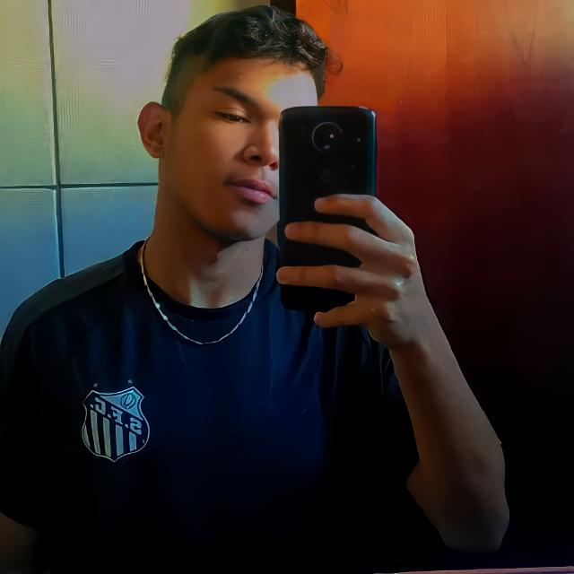

Curriculum Vitae

Lucas Ferreira Verão
TÉCNICO DE INFORMÁTICA PARA INTERNET
Curriculum Vitae
TÉCNICO DE INFORMÁTICA PARA INTERNET
Olá. Meu nome é Lucas e tenho 18 anos. Faço curso técnico na área de informática desde 2020, logo, tenho conhecimento básico sobre informática. Sou um jovem muito esforçado e organizado, não possuo nenhum vício e tento dar meu máximo em tudo que faço. Tenho experiência de trabalho, já fui ajudante em entregas de cosméticos pela empresa TNT e fiz estágio na Synergia Nerd na área de marketing.
Operador de Mídias Sociais
27/08/2018 - 31/08/2018
Nesse curso de carga horária de 16 horas compreendi Vídeos no YouTube,YouTube Editor, Como criar um Blog, Ferramentas para o Blog, WorldPress e Twitter, Facebook e Google+ Comércio Eletrônico (E-commerce), além de da criação de Loja Social.
Espanhol Básico
10/05/2018 - 10/11/2018
Esse curso foi ministrado por estagiárias do Curso Letras da UEMS, Nele compreendi o básico da linguagem espanhola.
Curso em Formação Inicial e continuada em Operador De Computador - FIC
15/06/2020 - 20/09/2020
Nesse curso tive o conhecimento de: Instalar, configurar e operar sistemas operacionais, aplicativos de escritório e periféricos. Organizar entrada e saída de dados em sistemas de informação, conforme procedimentos técnicos e atento às normas e políticas de segurança da informação e de propriedade intelectual.
Rotinas Administrativas
02/10/2018 - 15/10/2018
Nesse curso de 8hrs/aula compreendi as rotinas necessárias, comportamento e posição do profissional diante do local de trabalho.
Técnico de Informática para Internet
23/01/2020 - previsão de término: 2022
No curso técnico em Informática para Internet venho aprendendo a desenvolver programas de computador voltados especificamente para web. Com a ajuda de ferramentas para o desenvolvimento de sistemas, fazer a manutenção de sites e portais na internet e intranet. Este site por exemplo, é um site desenvolvido por mim atráves dos conhecimentos que adquiri no curso sobre Front-End e HTML.